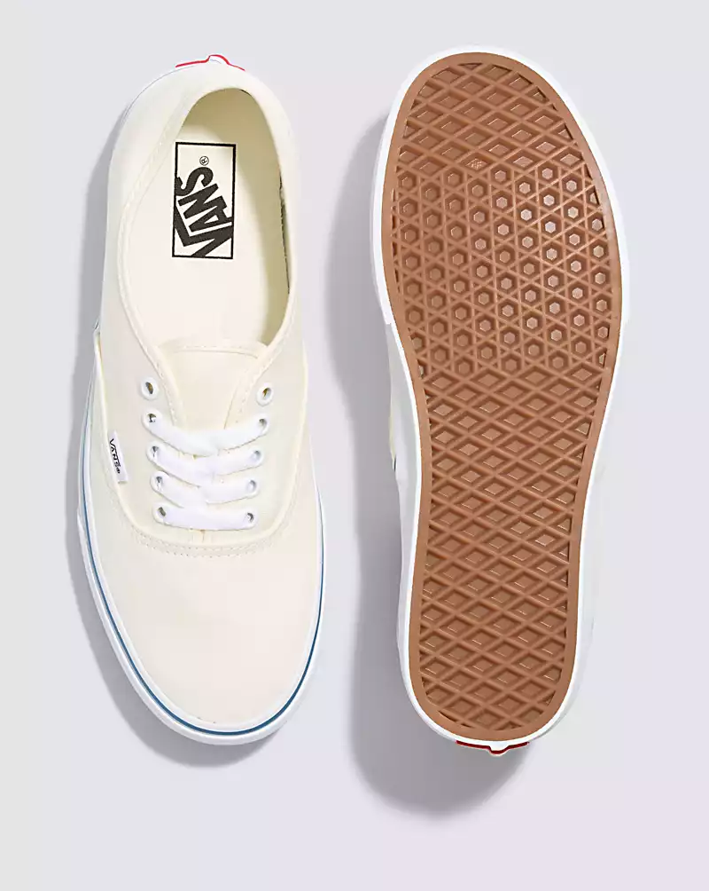

|  | Shoe Background:The Heritage Shoe that Started It All. This is the Authentic—Since 1966.The Authentic is the original Vans silhouette. First introduced in 1966 and driven forward by creative culture ever since, this time-honored shoe keeps the old school vibe alive with sturdy canvas uppers in seasonal colorways. With its classic low-top design and iconic rubber waffle outsole, the Authentic is a blank canvas for creativity that allows you to do your thing in your own unique way. Color Style:-White If you want to buy this Item Just go to:Vans Philippines |